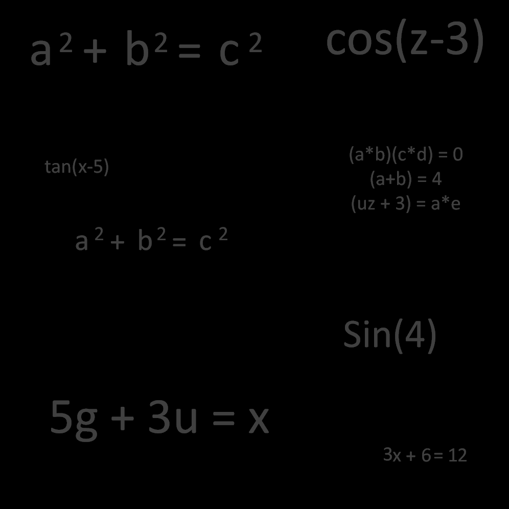
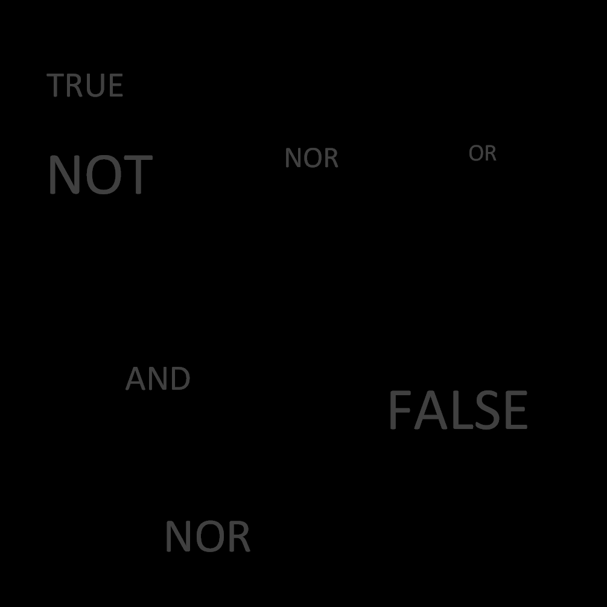

What is Boolean?
What is Boolean?
So what is Boolean?
Boolean, in simple terms, is a branch of Algebra, similar to standard highschool or College algebra
But what makes Boolean Different from other Algebra?
- Basic algebra utilizes numbers
- 5's
- 15's
- etc...
- And also uses numerical operations
- I+15 = 0
- 60-40 = 20
- X+1= 5
Algebra

- Boolean Algebra uses Logical Operations and expressions.
- OR
- AND
- And can result in 1 of 2 answers...
- TRUE
- or
- FALSE
Boolean

Boolean and Computer Architecture
Boolean and Computer Architecture
So how does Boolean, an algebra consisting of true or false, play a role in computer architecture, a computer
with circuits and wires?
To understand this, we must first understand the basic component of a computer...
Binary and Bits
Break open a computer and what do you get?
A bunch of circuit boards and wires
Let’s take a circuit board and closely look into it...
A circuit board contains hundreds of little wires, each one either carrying an electrical charge, or not
carrying an electrical charge.
To a computer, a single wire is known as a BIT:

And a bit can only be in 1 of 2 states:
This is also known as BINARY, meaning of 2 states
And is can be expressed as:
Similar to Boolean's Algebra results being only
Logic Gates
Logic Gates
But Boolean doesn't stop there...
One of the most used, and important, components that uses boolean are known as:
Logic Gates
Logic gates are like statement checkers, checking whether an input or inputs are TRUE or FALSE
And Outputting a TRUE or FALSE
Simple Logic Gate Example
- A logic gate takes in inputs
- And produces an output
- Which can only be TRUE or FALSE
- 1 or 0

NOT
- A logic gate takes in inputs
- And produces an output
- Which can only be TRUE or FALSE
- 1 or 0